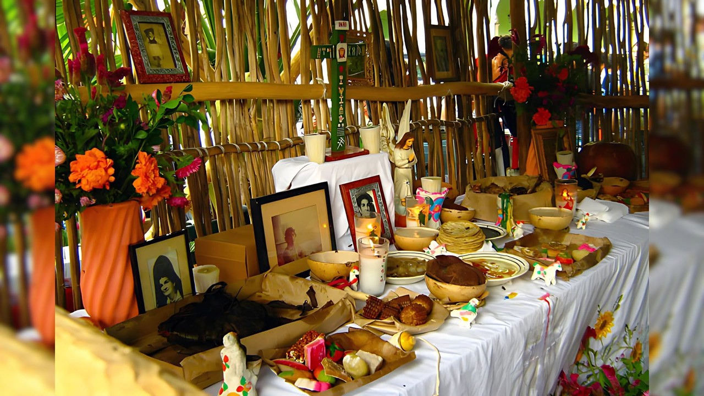
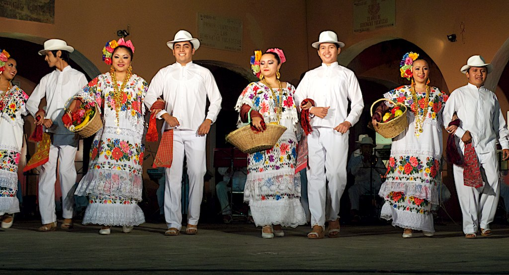
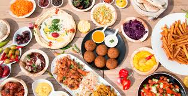
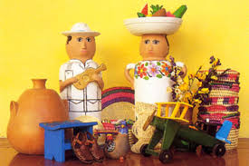
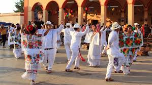
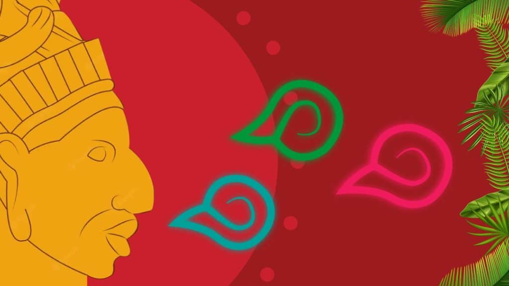

Explora las tradiciones que dan vida a esta maravillosa región.
¡Bienvenidos a nuestra página dedicada a las costumbres de Yucatán! Nos alegra que hayas decidido explorar esta ventana al fascinante mundo de las tradiciones yucatecas. Aquí encontrarás un recorrido por las prácticas culturales, festividades y valores que definen a esta región como un tesoro vivo de México. Queremos compartir contigo la esencia de su gente, sus colores, sabores y danzas que, generación tras generación, se mantienen vibrantes y llenas de significado.
Yucatán es más que un estado en el sureste de México: es un rincón del mundo donde el tiempo parece detenerse para preservar las huellas de un glorioso pasado maya y las influencias de la época colonial. Sus costumbres no solo narran historias de la vida cotidiana y la espiritualidad, sino que también expresan una profunda conexión con la naturaleza y la comunidad. A través de su gastronomía, sus festivales y sus tradiciones, Yucatán nos invita a descubrir una cultura que honra sus raíces mientras abraza el presente con orgullo.
El Hanal Pixán es una de las tradiciones más representativas de Yucatán, celebrada entre el 31 de octubre y el 2 de noviembre. Su significado, "comida de las ánimas", hace referencia a una ofrenda ritual dedicada a los seres queridos fallecidos. Durante esta festividad, las familias colocan altares adornados con velas, flores de cempasúchil, fotografías y platillos tradicionales como el mucbipollo (tamales grandes cocidos en horno de tierra).
El Hanal Pixán no solo es un momento para recordar a los difuntos, sino también para fortalecer los lazos familiares y la espiritualidad, recordando que la vida y la muerte son parte de un ciclo eterno.

La jarana es una danza emblemática de Yucatán, conocida por su energía y dinamismo. Los bailarines, vestidos con trajes típicos (las mujeres con huipiles bordados y los hombres con guayaberas), realizan pasos rápidos y sincronizados al ritmo de la música tradicional.
Este baile simboliza la alegría y el espíritu festivo de los yucatecos, y se presenta en eventos como las vaquerías y las festividades locales. Durante la jarana, es común ver a los participantes balancear botellas o vasos en sus cabezas, mostrando su destreza y habilidad.

La cocina de Yucatán es un festín de sabores únicos que combina ingredientes locales, como el achiote y la naranja agria, con técnicas prehispánicas y españolas. Entre los platillos más destacados están:

Yucatán es conocido por sus talentosos artesanos, quienes crean piezas como hamacas tejidas a mano, sombreros de jipi y bordados en huipiles. Estas obras no solo son prácticas, sino que también cuentan historias a través de sus patrones y colores.
La vestimenta tradicional, como los huipiles y guayaberas, no solo se usa en festividades, sino que también es un símbolo de identidad y orgullo cultural.

Las vaquerías son eventos sociales y culturales que reúnen a comunidades enteras para celebrar con música, danza y gastronomía. Estas festividades comenzaron en la época colonial, cuando los trabajadores de las haciendas organizaban bailes en honor a los santos patronos. Hoy en día, las vaquerías son una muestra de la unión y la alegría que caracteriza al pueblo yucateco.

Aunque el español es el idioma predominante, la lengua maya sigue siendo hablada por muchas personas en Yucatán. Esta lengua es un vínculo directo con la herencia ancestral y una herramienta para transmitir conocimientos sobre la naturaleza, la astronomía y las tradiciones.
La cosmovisión maya también influye en las prácticas culturales, reflejando un profundo respeto por los elementos naturales y una conexión espiritual con el universo.

Las costumbres de Yucatán son un puente entre el pasado y el presente, un recordatorio de que la cultura no solo se hereda, sino que también se vive y se reinventa. Explorar estas tradiciones es adentrarse en una tierra rica en historia, orgullo y belleza. ¡Esperamos que disfrutes este recorrido por el corazón de Yucatán!